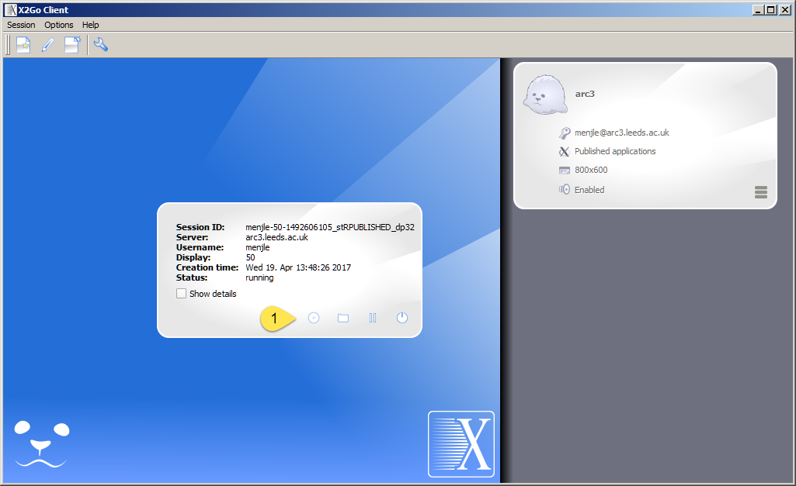
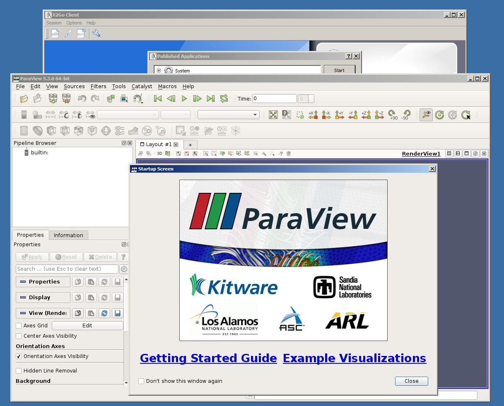

Remote Graphics – X2GO¶
The faculty of Earth and Environment are already users of X2GO and have excellent documentation on their web site:
https://www.environment.leeds.ac.uk/wiki/view/IT/LinuxRemoteX2Go
We have installed X2GO on ARC3 and ARC4. To use it you will need to install the client on your desktop (or laptop):
https://wiki.x2go.org/doku.php/download:start
If you have a Windows desktop PC you can install X2GO as a administrator or as a user. To install as a user you will need to customize the login process as described on the X2GO web site. In this description you will see that you need to open your download of X2GO, the x2goclisnt.exe file with 7-zip. I had not opened an exe file before but it works.
The first time you start it up 2 windows will appear.

You need to type into the window on the right details of the session that you wish to run. You can get that window to appear at any time selecting the menu Session and sub menu New session… at the top of the X2GO client.
The window on the right is the session profile window. I have numbered the places on the window where you need to provide information on the image below.

The information needs is:
The name of the session – I have used arc3
The name of the host which is arc3.leeds.ac.uk
Your userid
Select the option “Published Applications”
Sometimes you may get improved performance if you reduce the image transfer size or turn off file sharing. You can do this in the other tags on the profile window.
When you save the profile you will see that a box has appeared in the right panel of the client. If you double click on this a box appears in the center where you need to type your password.

When you have typed your password the session will start and you are given an option on what type of session you want through a pop up window.

Select the MATE option.

You can test it works by running vmd. Once you have the MATE shell type:
module load vmd
vmd

You can also test it by running paraview. Once you have the MATE shell type:
module load paraview
paraview --mesa-llvm

Normally when you login you are allocated login1 or login2 randomly. If you wish to restart a X2GO session then you need to login explicitly to the login node that you paused the session on. If you want to use this feature then you will need to explicitly login to login1.arc3.leeds.ac.uk or login2.arc3.leeds.ac.uk.
We have not currently tested all the modes that you can login with. The shells available with the way I have described are xterm or MATE Terminal.
When I initially logged in, an error window popped up which said something about the SSH daemon failing. If this happens to you, ignore it and move the window to one side as the button you need is probably hidden behind it. You can stop the message appearing again by going into the session menu and selecting the session management option. Select the session preferences for your session and in the shared folder tab de-select the use ssh port forwarding … option.
To speed up your session try the 2m-jpg option in the Connection tab of the
session preferences, which will reduce the number of colours displayed.